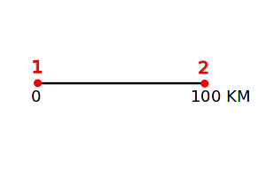

Select Range of Variables
Axes Orientation
 |  |
Normal | Reverse |
Range of Variables
0 to 1 | 0 to 100 |
|
|||
|
|
|||
Choose Plot Type
| X-Y | |
| Polar | |
| Ternary | |
| Map |
X Range
Min:
Max:
Y Range
Min:
Max:
Scale Size
Units
Point 1
R1:
Θ1:
Point 2
R2:
Θ2:
Degrees Radians
Select Range of Variables
Axes Orientation
| |
Normal | Reverse |
Range of Variables
0 to 1 | 0 to 100 |
Acquired Data
Copy and Paste to a file with .CSV extension
Align X-Y Axes

Click four corners of the axes starting with the bottom left and going clockwise.
Align Map To Scale Bar

Click on the two ends of the scale bar on the map.
Align Polar Axes

Click on the center, followed by two known points.
Align Ternary Axes

Click on the three corners in the order shown above.
Specify Plot (Foreground) Color
R: G: B:
Specify Background Color
R: G: B:
Acquire Data
Please align the axes before acquiring data.
WebPlotDigitizer v2.1 - Web based Plot Digitizer
Instructions and Video Tutorials
http://arohatgi.info/WebPlotDigitizer/?page_id=58
Report Bugs/Issues
https://github.com/ankitrohatgi/WebPlotDigitizer/issues
This program is distributed under the GNU General Public License Version 3.
Copyright 2011 Ankit Rohatgi <ankitrohatgi@hotmail.com>
http://www.arohatgi.info/WebPlotDigitizer
Fine Tuning
Detection Mode: Foreground Background
Color Distance:
Step Size [ΔX,ΔY] = [,] Pixels
Processing...